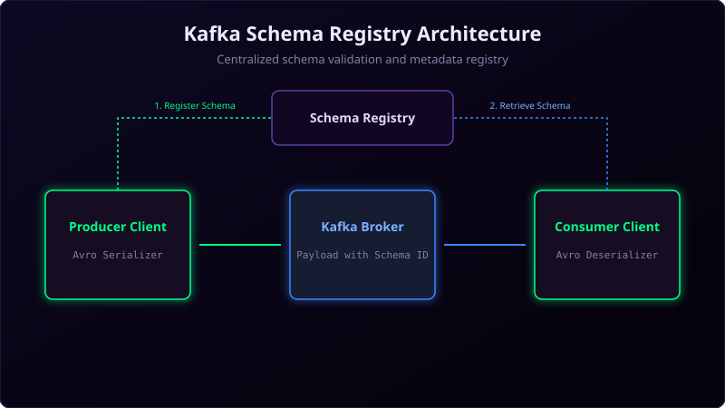

In distributed systems, microservices share data continuously. If one service updates its database structure (e.g., adding a middle name field to a user profile) and publishes this data to Kafka, downstream consumer applications that do not know about the new field can crash.
To prevent format conflicts, you must manage how message shapes change over time. This is called Schema Evolution, and it is typically coordinated using the Confluent Schema Registry.

Imagine a vending machine that accepts dollar bills:
- Backward Compatibility: If a bank prints a new 2026 design dollar bill, old vending machines must still be able to scan and accept it.
- Forward Compatibility: If you use a legacy vending machine, it should still accept older dollar bills from 1990 without jamming.
- Schema Registry: The central mint directory that defines exactly what printing dimensions are valid. If a customer tries to insert a fake Monopoly bill, the machine rejects it immediately.
What is Confluent Schema Registry?
The Schema Registry is a separate service that runs outside your Kafka brokers. It acts as a central library for schemas (typically written in formats like Apache Avro, JSON Schema, or Protobuf).
Here is how it coordinates communication:
- Registration: Before writing data, the producer's serializer registers the Avro schema with the Registry. The Registry returns a unique Schema ID.
- Write: The producer sends the message to the Kafka broker, prefixing the message bytes with just the Schema ID instead of the entire text schema (saving network bandwidth).
- Read: The consumer reads the message, extracts the Schema ID, fetches the corresponding schema from the Registry, and uses it to deserialize the payload.
Compatibility Rules
To evolve schemas safely, you must enforce compatibility rules on the Registry:
- BACKWARD (Default): New schemas can read data written by old schemas. Tuning: Only delete optional fields or add new fields with default values.
- FORWARD: Old schemas can read data written by new schemas. Tuning: Only add optional fields or delete fields that have default values.
- FULL: Both backward and forward compatible.
Java Producer Configuration Example
To use Schema Registry with Avro in Java, define the registry URL in your properties:
Properties props = new Properties();
props.put("bootstrap.servers", "localhost:9092");
// Use Avro Serializer
props.put("value.serializer", "io.confluent.kafka.serializers.KafkaAvroSerializer");
// Configure Schema Registry URL
props.put("schema.registry.url", "http://schema-registry:8081");
KafkaProducer<String, MyAvroClass> producer = new KafkaProducer<>(props);Conclusion
Do not pass raw JSON payloads in production systems where formats change frequently. By utilizing Apache Avro and the Schema Registry, you enforce schema validation rules, prevent application crashes, and keep data footprints small.